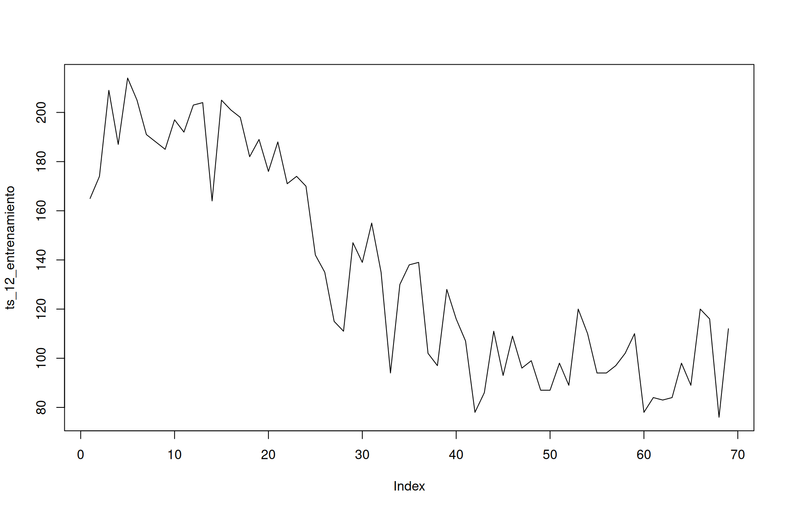
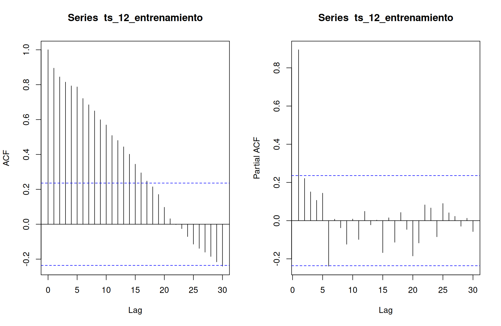
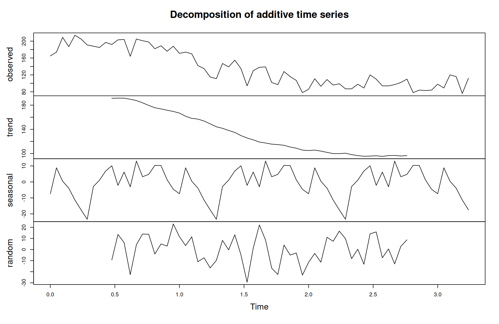
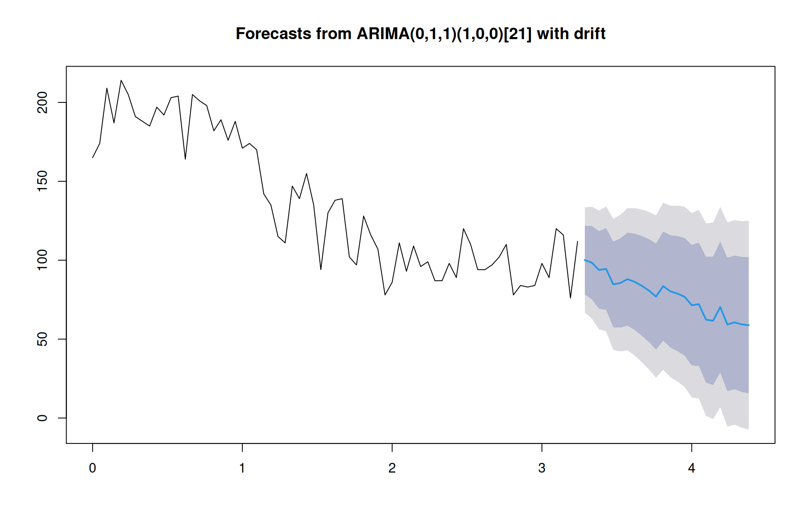
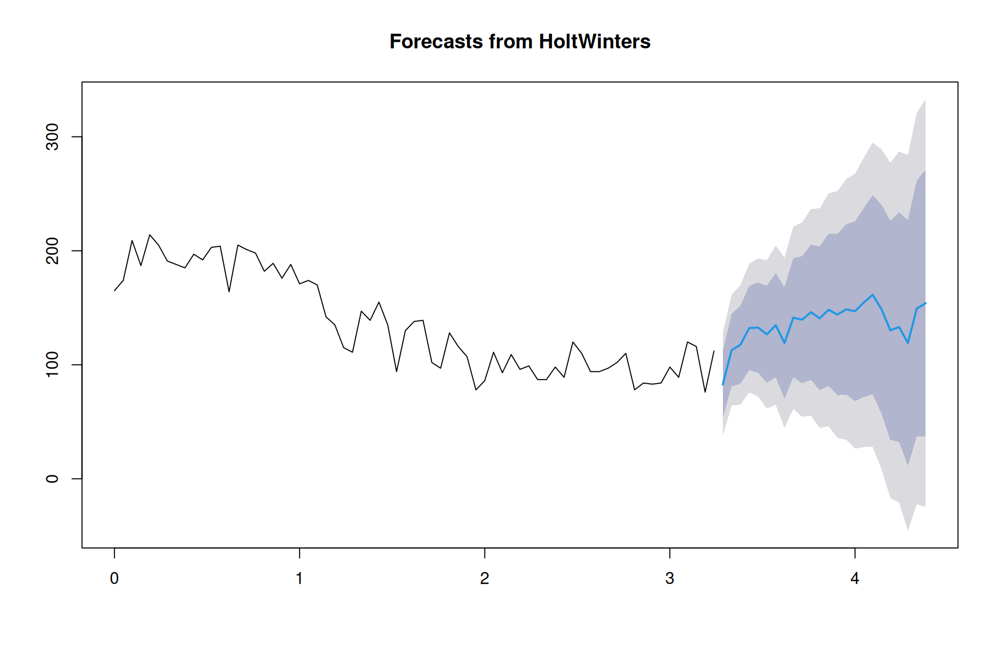
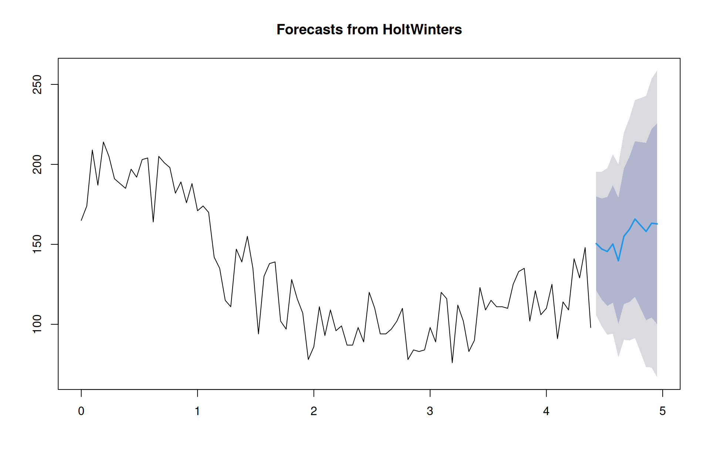

Homicidos en Guerrero
- Usando la información del archivo ejercicio_3.csv realizar un pronóstico de la serie de tiempo (de alguna entidad que sea de su interés) para un periodo de tiempo “razonable”, explicar este último punto.
Tomamos para este ejercicio a la entidad federativa del estado de Guerrero, pues es uno de los estados mas violentos del país, ademas de contar con destinos turisticos que intuimos estan correlacionados con la cantidad de homicidios que ocurren en esta entidad, el Estado de Guerrero es la entidad federativa número 12, por lo que filtramos los datos originales y eliminamos la columna que hace referencia al numero de Estado.
## # A tibble: 6 × 2
## fecha `Homicidio_Homicidio-doloso`
## <chr> <dbl>
## 1 31/01/17 165
## 2 28/02/17 174
## 3 31/03/17 209
## 4 30/04/17 187
## 5 31/05/17 214
## 6 30/06/17 205Con los datos ya filtrados y limpios, lo que haremos ahora será dividir nuestro conjunto de datos en 2 partes, una parte para entrenamiento y otra para test, utilizamos una división de 75-25
n = as.integer(length(ts_12$`Homicidio_Homicidio-doloso`) * 0.75)
ts_12_entrenamiento <- ts_12$`Homicidio_Homicidio-doloso`[1:n]
ts_12_test <- ts_12$`Homicidio_Homicidio-doloso`[(n+1):length(ts_12$`Homicidio_Homicidio-doloso`)]
plot(ts_12_entrenamiento, type = "l")
No vemos problemas evidentes con tener una varianza constante a lo largo de los datos.
Encontremos primero la estacionalidad de nuestra serie con ayuda de pruebas de hipótesis y de manera gráfica:

Podemos sospechar que con los datos de entrenamiento tenemos una estacionalidad cada 21 meses como lo muestra nuesto ACF. Entonces tomamos a 10 como la estacionalidad de la serie de tiempo, y así ajustemos nuevamente nuestros datos en el objeto adecuado.
Notemos que la interpretacion se complica un poco, pues la escala de tiempo ahora esta en que cada unidad representa 21 meses
Con los datos convertidos en un objeto mas apropiado, podemos pasar a hacer una descomposición clásica con la funcion decompose()

Empezaremos con un modelo SARIMA que será determinado con ayuda de la función auto.arima()
mod_arima <- auto.arima(ts_12_entrenamiento)
prediccion <- forecast::forecast(mod_arima, h = length(ts_12_test))
plot(prediccion)
Nuestro modelo principal parece débil, sin embargo evaluemos su poder predictivo, calculando el error cuadratico medio de los datos predecidos y de los datos del set de prueba:
## [1] 45302.09Así con este modelo tenemos un bajo desempeño como se esperaba. Pese a que nuestro enfoque reside en la predicción no está demás considerar unas pruebas de hipótesis para determinar si el modelo resulta adecuado para el modelado (Recordemos que nos interesa obetner un ruido blanco adecuado o lo que es lo mismo, a ver separado de manera adecuada las componentes):
Veamos varianza constante:
##
## studentized Breusch-Pagan test
##
## data: Y ~ X
## BP = 0.0054977, df = 1, p-value = 0.9409Se cumple varianza constante, veamos ahora normalidad
##
## Sieve-bootstrap Shapiro Test
##
## data: Y
## bootstrap-Shapiro = 0.98151, p-value = 0.733
## alternative hypothesis: Y does not follow a Gaussian ProcessUtilizamos la herramienta anterior que se basa en metodos de bootstrap para determinar que los residuos se distribuyen como una normal.
Revisemos un modelo mas, un suavizamiento Holt-Winters
mod_HW <- HoltWinters(ts_12_entrenamiento)
prediccion <- forecast::forecast(mod_HW, h = length(ts_12_test))
plot(prediccion)
Revisemos su poder predictivo:
## [1] 21475.58Tenemos un menor error, consideremos ahora las pruebas de hipotesis para ver que tenemos un buen modelo estadisticamente hablando:
##
## studentized Breusch-Pagan test
##
## data: Y ~ X
## BP = 3.5377, df = 1, p-value = 0.05999##
## Sieve-bootstrap Shapiro Test
##
## data: Y
## bootstrap-Shapiro = 0.9574, p-value = 0.994
## alternative hypothesis: Y does not follow a Gaussian ProcessTenemos que se cumple la varianza constante y normalidad en nuestros residuos, el modelo es adecuado estadisticamente hablado.
Así el modelo que consideramos usar en un modelo Holt-Winter con coeficientes:
## parametro valor
## alpha alpha 0.36522131
## beta beta 0.08839825
## gamma gamma 0.40157859Ajustemos este modelo para el conjunto de datos completo
ts_12 <- ts(ts_12$`Homicidio_Homicidio-doloso`, start = 0, frequency = 21)
mod2_HW <- HoltWinters(ts_12, alpha = mod_HW$alpha, beta = mod_HW$beta, gamma = mod_HW$gamma)
prediccion <- forecast::forecast(mod_HW, h = 12) # Predecimos el proximo año
plot(prediccion)